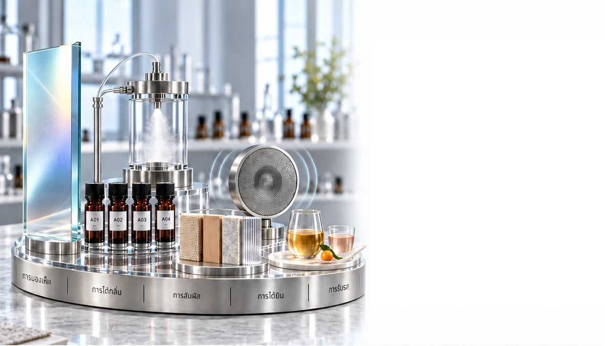

บริการ
ร่วมสร้างสรรค์
โซลูชันผลิตภัณฑ์ · ประสาทสัมผัส · กลิ่น ที่ออกแบบเฉพาะ
จากความเข้าใจเชิงลึกสู่ตลาด
เราร่วมมือกับแบรนด์เพื่อเปลี่ยนแนวคิดเป็นผลิตภัณฑ์ที่มีเอกลักษณ์ ประสบการณ์ทางประสาทสัมผัส และโซลูชันที่ขับเคลื่อนด้วยกลิ่น
สิ่งที่เราร่วมสร้างสรรค์
สี่เส้นทางบูรณาการจากแนวคิดสู่ตลาด
การพัฒนาที่ออกแบบเฉพาะด้านผลิตภัณฑ์
ประสาทสัมผัส แบรนด์ และนวัตกรรมเชิงหน้าที่


การพัฒนา
ผลิตภัณฑ์และ ODM
จากแนวคิดผลิตภัณฑ์สู่ความจริงที่พร้อมจำหน่าย
เราต่อยอดแนวคิดของคุณเป็นผลิตภัณฑ์ที่มีเอกลักษณ์และออกแบบสำหรับตลาดเป้าหมาย
- การพัฒนาสูตรเฉพาะ
- รูปแบบผลิตภัณฑ์และลักษณะทางประสาทสัมผัส
- ทิศทางบรรจุภัณฑ์และการวางตำแหน่งผลิตภัณฑ์
- การประสานงานตั้งแต่ต้นแบบถึงการผลิต

การพัฒนาผลิตภัณฑ์
กลิ่นหอมเพื่อการค้าปลีก
จากแนวคิดกลิ่นสู่คอลเลกชันที่พร้อมเข้าสู่ตลาด
เราพัฒนาผลิตภัณฑ์กลิ่นหอมที่มีเอกลักษณ์ เพื่อนำทิศทางกลิ่นของแบรนด์คุณสู่รูปแบบที่พร้อมจำหน่าย
- น้ำหอมชั้นสูง · กลิ่นหอมสำหรับบ้าน · กลิ่นหอมส่วนบุคคล
- ก้านหอมและอุปกรณ์กระจายกลิ่น · สเปรย์ห้องและผ้า
- สูตรกลิ่นหอมและรูปแบบผลิตภัณฑ์
- ทิศทางบรรจุภัณฑ์ · การทำตัวอย่าง · การประสานงานการผลิต

การออกแบบประสาทสัมผัสและ
กลิ่นเฉพาะแบรนด์
สร้างภาษาทางประสาทสัมผัสที่เป็นเอกลักษณ์ให้แบรนด์คุณ
ภาพ · กลิ่น · สัมผัส · เสียง · รส
เราผสานสิ่งเร้าทางประสาทสัมผัสเป็นประสบการณ์ที่มีเอกลักษณ์ โดยออกแบบให้สอดคล้องกับแบรนด์และกลุ่มเป้าหมายของคุณ
- โทนภาพและแสง · ทิศทางกลิ่นหอมและการรับกลิ่น · พื้นผิวและวัสดุ
- เสียงและรส · แนวทางประสบการณ์แบบบูรณาการ

นำกลิ่นเข้าสู่
ชีวิตประจำวัน
จากกลิ่นที่สร้างสรรค์สู่ประสบการณ์ที่สัมผัสจริง
เรานำแต่ละกลิ่นไปสู่สถานที่ ผลิตภัณฑ์ และกิจวัตรที่ผู้คนได้สัมผัสจริง
- การมาถึงและการต้อนรับ · การพัก สมาธิ และการฟื้นตัว
- กิจวัตรส่วนบุคคลและในบ้าน · จุดสัมผัสในร้านค้า

นวัตกรรมกลิ่น
เชิงหน้าที่
ออกแบบกลิ่นอย่างมีจุดมุ่งหมาย
เราพัฒนาแนวคิดกลิ่นที่นำด้วยหลักฐาน ก้าวไปไกลกว่าความหอมที่น่าพึงพอใจ สู่ประสบการณ์ผลิตภัณฑ์และสภาพแวดล้อมที่มีจุดมุ่งหมาย
- แนวคิดกลิ่นหอมที่ตอบสนองทางชีวภาพ
- ทิศทางด้านอารมณ์ · สมาธิ · การผ่อนคลาย · การนอนหลับ
- การทบทวนส่วนผสมกลิ่นหอมออกฤทธิ์และหลักฐาน
- การออกแบบการใช้งานกับผลิตภัณฑ์ พื้นที่ และต้นแบบ

จากกลิ่นเชิงหน้าที่
สู่การใช้งานจริง
ออกแบบตามจุดประสงค์สำหรับผลิตภัณฑ์ พื้นที่ และกิจวัตรประจำวัน
เราต่อยอดแนวคิดกลิ่นหอมเชิงหน้าที่เป็นรูปแบบ ระบบนำส่ง และประสบการณ์ที่ใช้ได้จริง โดยออกแบบให้สอดคล้องกับช่วงเวลาการใช้งานเฉพาะ
- สุขภาวะส่วนบุคคลและการบำบัดด้วยกลิ่น
- ผลิตภัณฑ์ดูแลผิว · ผลิตภัณฑ์ดูแลส่วนบุคคล · รูปแบบสวมใส่
- สภาพแวดล้อมเพื่อสมาธิ · การผ่อนคลาย · การฟื้นตัว · การนอนหลับ
- ลักษณะการนำส่ง · การประเมินต้นแบบและประสบการณ์

มาร่วมสร้างสรรค์กัน
จากความมุ่งหวังของคุณสู่ประสบการณ์ที่มีเอกลักษณ์และพร้อมเข้าสู่ตลาด
นำแนวคิดผลิตภัณฑ์ ทิศทางประสาทสัมผัส หรือเป้าหมายเชิงหน้าที่ของคุณมาพูดคุยกับเรา แล้วเราจะร่วมกันพัฒนาให้ชัดเจน มีเอกลักษณ์ และพร้อมก้าวต่อไป